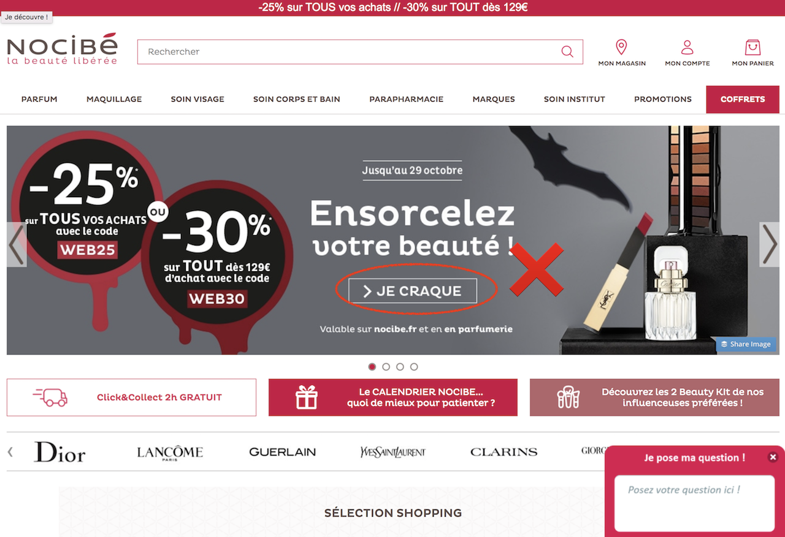

Es un “elemento de interacción que habla por sí mismo”; un atributo visual de un objeto o control que da pistas al usuario de cómo debe ser operado, según su experiencia, cultura y conocimiento. Se debe tener muy en cuentas los objetos: tamaño, formas, peso. Cabe resaltar que existen diferentes tipos de affordance (explícita, oculta, de patrón, metafórica y negativa)
